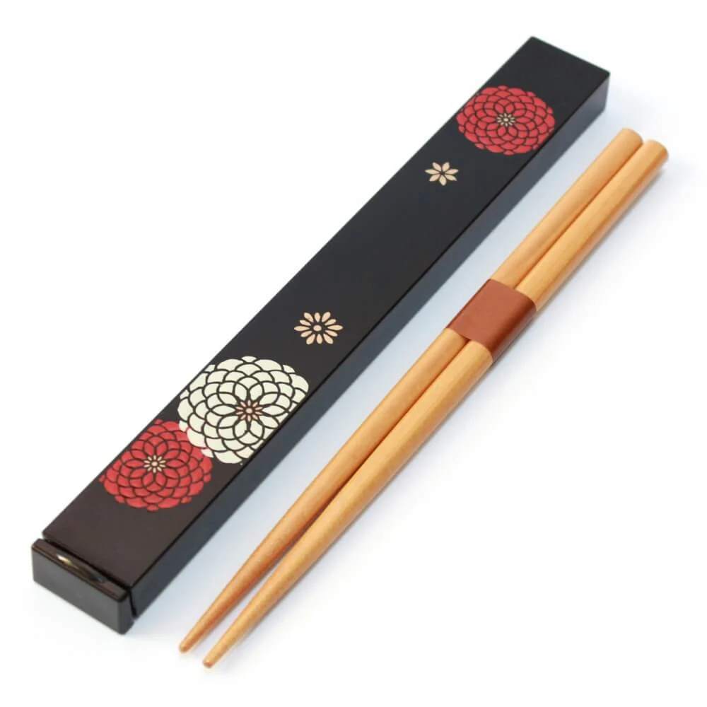

Culture 2
An important aspect of Chinese culture is how we eat our food. In Chinese culture, we often use chopsticks to eat food, such as rice and side dishes. Chopsticks are two sticks of equal length and size that are used to pick up food. They are often made out of wood, plastic, or metal. They have been used throughout Eastern Asia, and especially throughout China for over 3,000 years. They are an essential part of dining and eating etiquette in Chinese culture.
Origination and Celebration
Chopsticks originated in the Shang Dynasty, and were used more widely during the Han Dynasty. Originally used for cooking, they eventually became a utensil for eating. Using chopsticks takes a while to learn, however once mastered, it is both an efficient and elegant elegant way to eat food. The design of chopsticks has been adopted and adapted by other countries in East Asia, such as Japan and Korea, however the design and usage of chopsticks varies slightly between these countries. In China, chopsticks are typically longer and thicker than those used in Japan and Korea. Regardless, chopsticks are still an important part of society, and will always symbolize the culture of China.